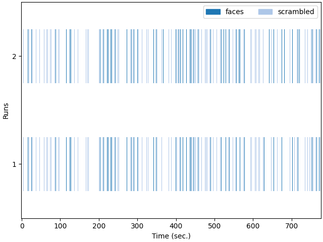
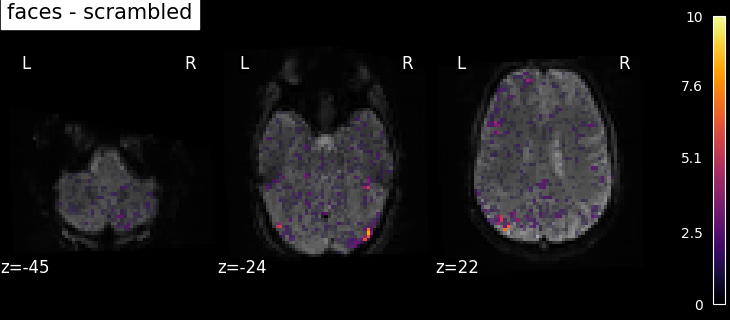

Note
Click here to download the full example code or to run this example in your browser via Binder
9.5.6. Single-subject data (two sessions) in native space¶
The example shows the analysis of an SPM dataset studying face perception. The analysis is performed in native space. Realignment parameters are provided with the input images, but those have not been resampled to a common space.
The experimental paradigm is simple, with two conditions; viewing a face image or a scrambled face image, supposedly with the same low-level statistical properties, to find face-specific responses.
For details on the data, please see: Henson, R.N., Goshen-Gottstein, Y., Ganel, T., Otten, L.J., Quayle, A., Rugg, M.D. Electrophysiological and haemodynamic correlates of face perception, recognition and priming. Cereb Cortex. 2003 Jul;13(7):793-805. http://www.dx.doi.org/10.1093/cercor/13.7.793
This example takes a lot of time because the input are lists of 3D images sampled in different positions (encoded by different affine functions).
print(__doc__)
Fetch the SPM multimodal_faces data.
from nilearn.datasets import fetch_spm_multimodal_fmri
subject_data = fetch_spm_multimodal_fmri()
Specfiy timing and design matrix parameters.
tr = 2. # repetition time, in seconds
slice_time_ref = 0. # Sample at the beginning of each acquisition.
drift_model = 'Cosine' # We use a discrete cosine transform to model signal drifts.
high_pass = .01 # The cutoff for the drift model is 0.01 Hz.
hrf_model = 'spm + derivative' # The hemodynamic response function is the SPM canonical one.
Resample the images.
This is achieved by the concat_imgs function of Nilearn.
import warnings
from nilearn.image import concat_imgs, resample_img, mean_img
# Avoid getting too many warnings due to resampling
with warnings.catch_warnings():
warnings.simplefilter("ignore")
fmri_img = [concat_imgs(subject_data.func1, auto_resample=True),
concat_imgs(subject_data.func2, auto_resample=True)]
affine, shape = fmri_img[0].affine, fmri_img[0].shape
print('Resampling the second image (this takes time)...')
fmri_img[1] = resample_img(fmri_img[1], affine, shape[:3])
Out:
Resampling the second image (this takes time)...
Let’s create mean image for display purposes.
Make the design matrices.
import numpy as np
import pandas as pd
from nilearn.glm.first_level import make_first_level_design_matrix
design_matrices = []
Loop over the two sessions.
for idx, img in enumerate(fmri_img, start=1):
# Build experimental paradigm
n_scans = img.shape[-1]
events = pd.read_table(subject_data['events{}'.format(idx)])
# Define the sampling times for the design matrix
frame_times = np.arange(n_scans) * tr
# Build design matrix with the reviously defined parameters
design_matrix = make_first_level_design_matrix(
frame_times,
events,
hrf_model=hrf_model,
drift_model=drift_model,
high_pass=high_pass,
)
# put the design matrices in a list
design_matrices.append(design_matrix)
We can specify basic contrasts (to get beta maps). We start by specifying canonical contrast that isolate design matrix columns.
contrast_matrix = np.eye(design_matrix.shape[1])
basic_contrasts = dict([(column, contrast_matrix[i])
for i, column in enumerate(design_matrix.columns)])
We actually want more interesting contrasts. The simplest contrast just makes the difference between the two main conditions. We define the two opposite versions to run one-tailed t-tests. We also define the effects of interest contrast, a 2-dimensional contrasts spanning the two conditions.
contrasts = {
'faces-scrambled': basic_contrasts['faces'] - basic_contrasts['scrambled'],
'scrambled-faces': -basic_contrasts['faces'] + basic_contrasts['scrambled'],
'effects_of_interest': np.vstack((basic_contrasts['faces'],
basic_contrasts['scrambled']))
}
Fit the GLM for the 2 sessions by specifying a FirstLevelModel and then fitting it.
from nilearn.glm.first_level import FirstLevelModel
print('Fitting a GLM')
fmri_glm = FirstLevelModel()
fmri_glm = fmri_glm.fit(fmri_img, design_matrices=design_matrices)
Out:
Fitting a GLM
Now we can compute contrast-related statistical maps (in z-scale), and plot them.
print('Computing contrasts')
from nilearn import plotting
# Iterate on contrasts
for contrast_id, contrast_val in contrasts.items():
print("\tcontrast id: %s" % contrast_id)
# compute the contrasts
z_map = fmri_glm.compute_contrast(
contrast_val, output_type='z_score')
# plot the contrasts as soon as they're generated
# the display is overlaid on the mean fMRI image
# a threshold of 3.0 is used, more sophisticated choices are possible
plotting.plot_stat_map(
z_map, bg_img=mean_image, threshold=3.0, display_mode='z',
cut_coords=3, black_bg=True, title=contrast_id)
plotting.show()
- 
- 

Out:
Computing contrasts
contrast id: faces-scrambled
/home/circleci/miniconda3/envs/testenv/lib/python3.8/site-packages/nilearn/glm/first_level/first_level.py:657: UserWarning:
One contrast given, assuming it for all 2 runs
contrast id: scrambled-faces
/home/circleci/miniconda3/envs/testenv/lib/python3.8/site-packages/nilearn/glm/first_level/first_level.py:657: UserWarning:
One contrast given, assuming it for all 2 runs
contrast id: effects_of_interest
/home/circleci/miniconda3/envs/testenv/lib/python3.8/site-packages/nilearn/glm/first_level/first_level.py:657: UserWarning:
One contrast given, assuming it for all 2 runs
/home/circleci/miniconda3/envs/testenv/lib/python3.8/site-packages/nilearn/glm/contrasts.py:352: UserWarning:
Running approximate fixed effects on F statistics.
Based on the resulting maps we observe that the analysis results in wide activity for the ‘effects of interest’ contrast, showing the implications of large portions of the visual cortex in the conditions. By contrast, the differential effect between “faces” and “scrambled” involves sparser, more anterior and lateral regions. It also displays some responses in the frontal lobe.
Total running time of the script: ( 1 minutes 42.033 seconds)
Estimated memory usage: 980 MB